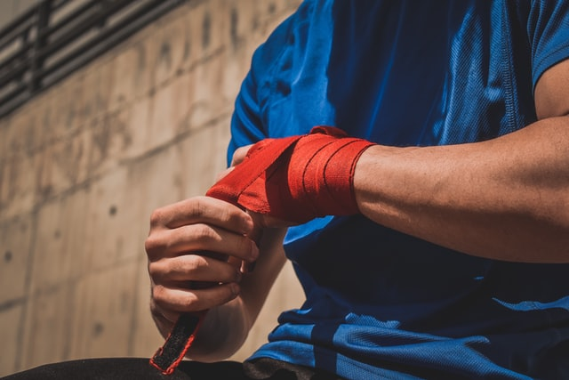

| 트레이닝 | 10,12온스 |
| 스파링 | 14,16온스 |
글러브는 용도별로 온스를 달리한다. 주로 트레이닝용으로는 10,12온스를 사용하고 스파링용으로는 14,16온스를 사용한다. 트레이닝 혹은 스파링을 위해서 어떤 글러브 사이즈를 선택해야 하나? 글러브 사이즈를 잘 선택하는 것은 꽤 어려운 일이기도 하고 헷갈리기도 합니다. 왜냐하면 글러브 사아즈는 우리가 일상 생활에서 쉽게 접하는 Small, Medium, Large 이런 식으로 나오는게 아니라 8온스, 12온스 머 이런식으로 나오기 때문이죠. 자 이제 나한테 맞는 글러브 사이즈를 고르는 법을 살펴 보죠.
크게 두가지를 살펴 보면 됩니다. 첫째, 스파링을 할 것인가? 아니면 헤비백이나 미트훈련에 사용할 것인가? 가장 중요한 질문이겠죠. 어디에 글러브를 사용할 것인가? 그러면 어떤분은 "펀치"할때 쓰죠 라고 하는 초보자 분들이 있는데요. ^ ^ 좀 더 정확히 말하면 누구에게 펀치를 날릴 것인지가 중요합니다. 사람인지 아니면 포커스미트나 헤비백일지를 구분하는 것이 먼저 중요합니다.
왜 스파링할 때 더 큰 사이즈의 글러브를 사용할까요: 간단히 말해서, 스파링 상대가 부상 당하는 것을 줄이기 위해서죠. 우리는 스파링 파트너가 실력이 느는 것을 원하지만, 매번 KO를 시킬 필요는 없는거죠. 불필요한 리스크를 없애는 차원이라고 보면 됩니다.